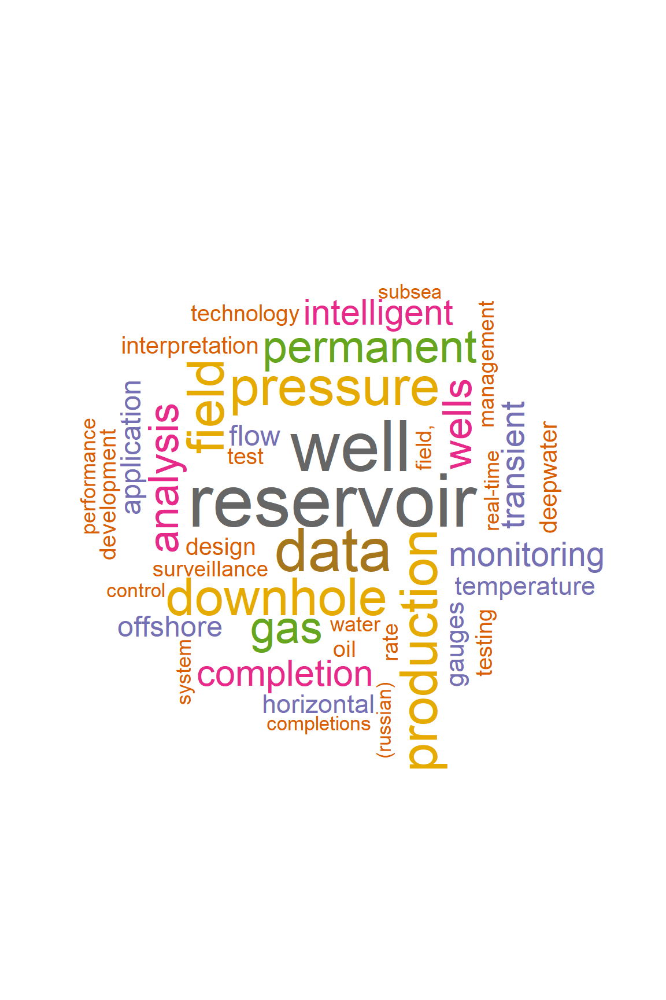
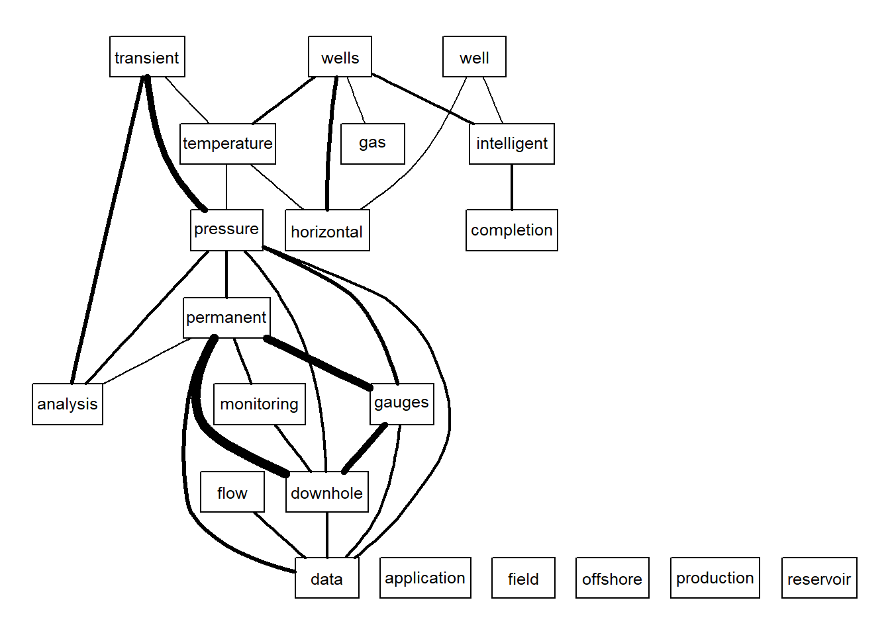
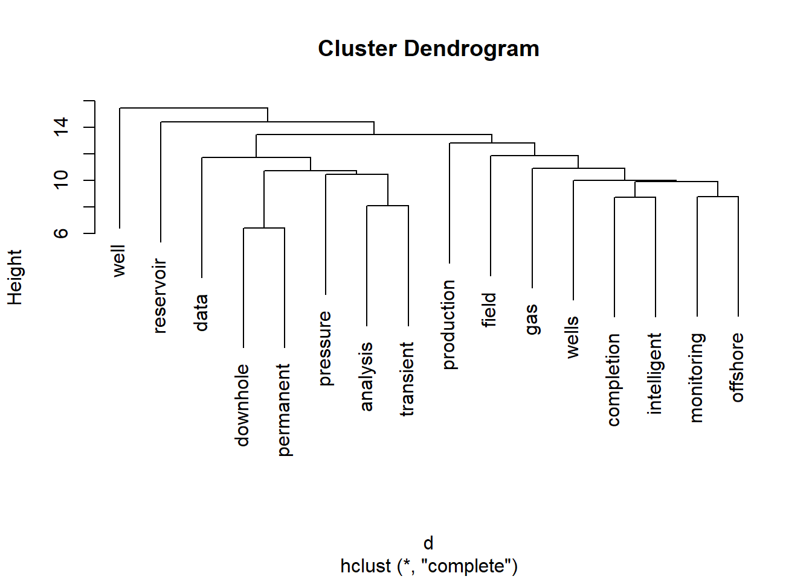

Text Mining of Permanent Downhole Gauges
Vignette Author
2017-10-26
library(petro.One)
library(tm)## Loading required package: NLPmy_url <- make_search_url(query = "Permanent Downhole Gauge",
how = "all")
get_papers_count(my_url) # how many papers total## [1] 544papers_by_type(my_url) # papers by type## # A tibble: 3 x 2
## name value
## <chr> <dbl>
## 1 Conference paper 464
## 2 Journal paper 76
## 3 Presentation 4# create a dataframe of papers found
df <- read_multidoc(my_url)
df## # A tibble: 544 x 6
## title_data
## <chr>
## 1 Permanent Downhole Gauge: A Need or A Luxury?
## 2 Reservoir Management Optimization Using Permanent Downhole Gauge Data
## 3 Encouraging Experience in the Use of Permanent Downhole Gauges
## 4 Pressure Transient Analysis Of Data From Permanent Downhole Gauges
## 5 Comparative Analysis of Permanent Downhole Gauges and their Applications
## 6 Wavelet Filtering of Permanent Downhole Gauge Data
## 7 Interpreting Pressure and Flow Rate Data from Permanent Downhole Gauges Usi
## 8 Analyzing Transient Pressure From Permanent Downhole Gauges (PDG) Using Wav
## 9 Analyzing Simultaneous Rate and Pressure Data From Permanent Downhole Gauge
## 10 Recovery Increase by Permanent Downhole Gages Data - Western Siberia Field
## # ... with 534 more rows, and 5 more variables: paper_id <chr>,
## # source <chr>, type <chr>, year <int>, author1_data <chr>library(petro.One)
term_freq <- term_frequency(df)
term_freq## word freq
## 1 reservoir 124
## 2 well 118
## 3 data 99
## 4 pressure 85
## 5 downhole 82
## 6 production 82
## 7 field 81
## 8 gas 69
## 9 permanent 69
## 10 analysis 62
## 11 wells 60
## 12 completion 52
## 13 intelligent 50
## 14 monitoring 46
## 15 transient 45
## 16 flow 38
## 17 offshore 38
## 18 application 37
## 19 gauges 32
## 20 horizontal 32
## 21 temperature 32
## 22 deepwater 29
## 23 design 29
## 24 interpretation 28
## 25 technology 27
## 26 testing 27
## 27 development 26
## 28 test 26
## 29 oil 25
## 30 field, 24
## 31 rate 24
## 32 surveillance 24
## 33 management 23
## 34 performance 22
## 35 real-time 22
## 36 system 22
## 37 water 22
## 38 completions 21
## 39 control 21
## 40 subsea 21
## 41 (russian) 20
## 42 injection 19
## 43 successful 18
## 44 dynamic 17
## 45 history 17
## 46 integrated 16
## 47 optimization 16
## 48 reliability 16
## 49 deconvolution 15
## 50 gauge 15
## 51 experience 14
## 52 simulation 14
## 53 fracture 13
## 54 model 13
## 55 modeling 13
## 56 reservoirs 13
## 57 applications 12
## 58 malaysia 12
## 59 formation 11
## 60 gulf 11
## 61 logging 11
## 62 numerical 11
## 63 smart 11
## 64 systems 11
## 65 wellbore 11
## 66 fractured 10
## 67 method 10
## 68 sand 10
## 69 trinidad 10
## 70 advanced 9
## 71 determination 9
## 72 estimation 9
## 73 fields 9
## 74 improved 9
## 75 integration 9
## 76 mexico 9
## 77 sea 9
## 78 time 9
## 79 value 9
## 80 wavelet 9
## 81 basin 8
## 82 carbonate 8
## 83 characterization 8
## 84 evolution 8
## 85 installation 8
## 86 mature 8
## 87 measurements 8
## 88 modelling 8
## 89 operation 8
## 90 properties 8
## 91 real 8
## 92 recovery 8
## 93 sensing 8
## 94 shale 8
## 95 solution 8
## 96 techniques 8
## 97 zone 8
## 98 -term 7
## 99 allocation 7
## 100 challenges 7
## 101 condensate 7
## 102 deep 7
## 103 drilling 7
## 104 fluid 7
## 105 hpht 7
## 106 hydraulic 7
## 107 implementation 7
## 108 learned 7
## 109 operations 7
## 110 pilot 7
## 111 stimulation 7
## 112 subsurface 7
## 113 (pdg) 6
## 114 applied 6
## 115 conditions 6
## 116 distributed 6
## 117 effective 6
## 118 evaluation 6
## 119 extended 6
## 120 field: 6
## 121 impact 6
## 122 interference 6
## 123 marginal 6
## 124 methods 6
## 125 multiphase 6
## 126 multiple 6
## 127 near 6
## 128 optimizing 6
## 129 perforation 6
## 130 permeability 6
## 131 planning 6
## 132 processing 6
## 133 provides 6
## 134 qualification 6
## 135 results 6
## 136 tight 6
## 137 well-test 6
## 138 world 6
## 139 analytical 5
## 140 campos 5
## 141 class 5
## 142 completing 5
## 143 continuous 5
## 144 deployment 5
## 145 esp 5
## 146 hp/ht 5
## 147 inflow 5
## 148 integrating 5
## 149 karachaganak 5
## 150 learning 5
## 151 lessons 5
## 152 lift 5
## 153 managing 5
## 154 models 5
## 155 oman 5
## 156 petroleum 5
## 157 practical 5
## 158 remote 5
## 159 review 5
## 160 saudi 5
## 161 simultaneous 5
## 162 success 5
## 163 tests 5
## 164 tool 5
## 165 treatment 5
## 166 -hole 4
## 167 analyzing 4
## 168 aspects 4
## 169 australia 4
## 170 automatic 4
## 171 basin, 4
## 172 behavior 4
## 173 brazil 4
## 174 brent 4
## 175 complex 4
## 176 considerations 4
## 177 critical 4
## 178 damage 4
## 179 delivery 4
## 180 enhance 4
## 181 future 4
## 182 giant 4
## 183 hole 4
## 184 implementing 4
## 185 information 4
## 186 interpreting 4
## 187 key 4
## 188 machine 4
## 189 management: 4
## 190 matching 4
## 191 miscible 4
## 192 mitigate 4
## 193 movement 4
## 194 multilateral 4
## 195 multiwell 4
## 196 oilfield 4
## 197 openhole 4
## 198 optical 4
## 199 optimisation 4
## 200 parameter 4
## 201 placement 4
## 202 potential 4
## 203 pressure-transient 4
## 204 productivity 4
## 205 pump 4
## 206 selection 4
## 207 sensors 4
## 208 solutions 4
## 209 strategy 4
## 210 studies 4
## 211 thermal 4
## 212 thin 4
## 213 tidal 4
## 214 transform 4
## 215 unconsolidated 4
## 216 video: 4
## 217 wireline 4
## 218 zonal 4
## 219 -darcy 3
## 220 -isothermal 3
## 221 -phase 3
## 222 -salt 3
## 223 active 3
## 224 analyses 3
## 225 analysis, 3
## 226 analysis: 3
## 227 approaches 3
## 228 arabia 3
## 229 area 3
## 230 artificial 3
## 231 automated 3
## 232 balmoral 3
## 233 benchmark 3
## 234 bottomhole 3
## 235 brazilian 3
## 236 brown 3
## 237 brunei 3
## 238 buildup 3
## 239 champion 3
## 240 characterisation 3
## 241 cluster 3
## 242 combining 3
## 243 compacting 3
## 244 comparison 3
## 245 construction 3
## 246 detection 3
## 247 development, 3
## 248 devices 3
## 249 diagnosing 3
## 250 diagnostics 3
## 251 effects 3
## 252 enables 3
## 253 engineering 3
## 254 enhancing 3
## 255 environment 3
## 256 execution 3
## 257 experimental 3
## 258 extended-reach 3
## 259 failure 3
## 260 fields: 3
## 261 filtering 3
## 262 flood 3
## 263 flow-rate 3
## 264 flowing 3
## 265 fracturing 3
## 266 gas-condensate 3
## 267 gas-lift 3
## 268 generation 3
## 269 green 3
## 270 heterogeneity 3
## 271 heterogeneous 3
## 272 highest 3
## 273 histories 3
## 274 hydrocarbon 3
## 275 increase 3
## 276 induced 3
## 277 innovative 3
## 278 inversion 3
## 279 investigation 3
## 280 isolation 3
## 281 jet 3
## 282 lower 3
## 283 mahogany 3
## 284 marlim 3
## 285 measurement 3
## 286 methodology 3
## 287 mining 3
## 288 module 3
## 289 neural 3
## 290 nigeria 3
## 291 nonlinear 3
## 292 offshore, 3
## 293 onshore 3
## 294 operational 3
## 295 operator 3
## 296 optimize 3
## 297 pack 3
## 298 pdg 3
## 299 perforating 3
## 300 practices 3
## 301 profiling 3
## 302 proppant 3
## 303 pumps 3
## 304 quantitative 3
## 305 reconstruction 3
## 306 regression 3
## 307 reservoirs, 3
## 308 risk 3
## 309 risks 3
## 310 sand-control 3
## 311 santos 3
## 312 satellite 3
## 313 scale 3
## 314 signal 3
## 315 static 3
## 316 step 3
## 317 storage 3
## 318 story 3
## 319 strategies 3
## 320 structure 3
## 321 surface 3
## 322 system: 3
## 323 technologies 3
## 324 testing: 3
## 325 thermodynamic 3
## 326 tobago 3
## 327 transients 3
## 328 uncertainty 3
## 329 understanding 3
## 330 valve 3
## 331 waterflood 3
## 332 wireless 3
## 333 workover 3
## 334 -electric 2
## 335 -gas-cap 2
## 336 (io) 2
## 337 abu 2
## 338 accuracy 2
## 339 accurate 2
## 340 adaptive 2
## 341 aghar-4 2
## 342 al-khali 2
## 343 alvheim 2
## 344 angola 2
## 345 annular-pressure 2
## 346 anti-slug 2
## 347 applying 2
## 348 aquifer 2
## 349 arctic 2
## 350 asphaltene 2
## 351 asset 2
## 352 auto 2
## 353 automation 2
## 354 b-splines 2
## 355 balance 2
## 356 bayesian 2
## 357 bore 2
## 358 brownfield 2
## 359 capturing 2
## 360 carbonates 2
## 361 caspian 2
## 362 cavity 2
## 363 challenges, 2
## 364 change 2
## 365 channels 2
## 366 clastic 2
## 367 clean- 2
## 368 cleanup 2
## 369 co2 2
## 370 combined 2
## 371 commingled 2
## 372 comparative 2
## 373 completed 2
## 374 complicated 2
## 375 compressibility 2
## 376 conducting 2
## 377 connectivity 2
## 378 constituent 2
## 379 constrained 2
## 380 contact 2
## 381 conventional 2
## 382 conveyed 2
## 383 convolution-kernel- 2
## 384 cost 2
## 385 creating 2
## 386 deep, 2
## 387 delivering 2
## 388 design, 2
## 389 detect 2
## 390 developing 2
## 391 development: 2
## 392 developments 2
## 393 device 2
## 394 dhabi 2
## 395 digital 2
## 396 dipping 2
## 397 directional 2
## 398 disconnect 2
## 399 dynamics 2
## 400 eagle 2
## 401 early 2
## 402 economic 2
## 403 efficiency 2
## 404 efficient 2
## 405 electric 2
## 406 electrical 2
## 407 element 2
## 408 empty 2
## 409 enabling 2
## 410 encroachment 2
## 411 enhanced 2
## 412 envelope 2
## 413 era 2
## 414 estimates 2
## 415 estimating 2
## 416 example 2
## 417 examples 2
## 418 expandable 2
## 419 expense 2
## 420 exploration 2
## 421 extracted 2
## 422 extreme 2
## 423 failed 2
## 424 fall- 2
## 425 fiber 2
## 426 fibre 2
## 427 filter 2
## 428 filtration 2
## 429 flexibility 2
## 430 floating 2
## 431 flowrate 2
## 432 formation, 2
## 433 fractures 2
## 434 frequency 2
## 435 gages 2
## 436 gauge: 2
## 437 gauges: 2
## 438 genesis 2
## 439 geomechanical 2
## 440 gom 2
## 441 gor 2
## 442 gravel 2
## 443 growth 2
## 444 heavy 2
## 445 heavy-oil 2
## 446 history: 2
## 447 horizontal, 2
## 448 hthp 2
## 449 hydrodynamic 2
## 450 immiscible 2
## 451 improve 2
## 452 improvement 2
## 453 improves 2
## 454 india's 2
## 455 individual 2
## 456 indonesia 2
## 457 informative 2
## 458 injector 2
## 459 installation, 2
## 460 installations 2
## 461 installed 2
## 462 intelligent-completion 2
## 463 interventions 2
## 464 interwell 2
## 465 job 2
## 466 junction 2
## 467 justify 2
## 468 kazakhstan 2
## 469 lesson 2
## 470 lifting 2
## 471 limits 2
## 472 line 2
## 473 located 2
## 474 locations 2
## 475 lubricator 2
## 476 maintenance 2
## 477 major 2
## 478 mangala 2
## 479 material 2
## 480 maximise 2
## 481 maximizing 2
## 482 midland 2
## 483 minimization 2
## 484 mitigating 2
## 485 mode 2
## 486 monitor 2
## 487 multi-fractured 2
## 488 multi-layer 2
## 489 multi-zone 2
## 490 multi-zone, 2
## 491 multipay 2
## 492 multirate 2
## 493 multizone 2
## 494 networks 2
## 495 noisy 2
## 496 nonisothermal 2
## 497 norwegian 2
## 498 open 2
## 499 operating 2
## 500 operator's 2
## 501 opportunities 2
## 502 optics 2
## 503 ormen 2
## 504 overview 2
## 505 pad 2
## 506 pcp 2
## 507 performance--cannonball 2
## 508 permanently 2
## 509 permeabilities 2
## 510 petrophysical 2
## 511 physics- 2
## 512 pilots 2
## 513 platform: 2
## 514 pore 2
## 515 practice 2
## 516 prediction 2
## 517 pressure-dependent-permeability 2
## 518 pressure-rate 2
## 519 pressure, 2
## 520 pressure/temperature 2
## 521 probabilistic 2
## 522 process 2
## 523 processes 2
## 524 progressing 2
## 525 provide 2
## 526 pta 2
## 527 pulse 2
## 528 pumping 2
## 529 py-3 2
## 530 qualitative 2
## 531 quarter 2
## 532 rapid 2
## 533 reach 2
## 534 record 2
## 535 removal 2
## 536 reserves 2
## 537 reservoir-pressure 2
## 538 reservoir, 2
## 539 response 2
## 540 results, 2
## 541 retrofit 2
## 542 right-time 2
## 543 road 2
## 544 roncador 2
## 545 rub 2
## 546 sandface 2
## 547 sands 2
## 548 sarah 2
## 549 sector, 2
## 550 seismic 2
## 551 selective 2
## 552 selectively 2
## 553 sequences 2
## 554 shaheen 2
## 555 siberia 2
## 556 single 2
## 557 siri 2
## 558 skin, 2
## 559 slope 2
## 560 sour 2
## 561 start- 2
## 562 state 2
## 563 stranded 2
## 564 structures 2
## 565 successfully 2
## 566 surface-controlled 2
## 567 suspension 2
## 568 systems: 2
## 569 temperature, 2
## 570 temporary 2
## 571 tengiz 2
## 572 tertiary 2
## 573 testing, 2
## 574 thailand 2
## 575 tracking 2
## 576 treatments 2
## 577 turbidite 2
## 578 ukcs 2
## 579 ultra-deep 2
## 580 underbalanced 2
## 581 understand 2
## 582 upper 2
## 583 utilizing 2
## 584 valves 2
## 585 variable 2
## 586 variable-rate 2
## 587 wavelet- 2
## 588 wax 2
## 589 way 2
## 590 well-testing 2
## 591 well-testing. 2
## 592 wells: 2
## 593 workflow 2
## 594 years 2
## 595 zones 2
## 596 'digital 1
## 597 -1x 1
## 598 -bore 1
## 599 -continuous 1
## 600 -cost 1
## 601 -cost, 1
## 602 -expected 1
## 603 -fourier-transform- 1
## 604 -line 1
## 605 -pass 1
## 606 -permeability 1
## 607 -permeability, 1
## 608 -pressure 1
## 609 -rate 1
## 610 -reach 1
## 611 -resolution 1
## 612 -salt: 1
## 613 -temperature 1
## 614 -uniform 1
## 615 -value 1
## 616 -well 1
## 617 -zone 1
## 618 (dts* 1
## 619 (ed) 1
## 620 (esp 1
## 621 (icd) 1
## 622 (icds) 1
## 623 (partners/regulators/internal 1
## 624 (petrobras): 1
## 625 (tfl) 1
## 626 1-y1 1
## 627 10-year 1
## 628 1st 1
## 629 3-phase 1
## 630 35% 1
## 631 500f 1
## 632 700 1
## 633 absolute 1
## 634 accelerates 1
## 635 accounting 1
## 636 achieving 1
## 637 acid 1
## 638 aconcagua 1
## 639 acquired 1
## 640 actually 1
## 641 adding 1
## 642 adequate 1
## 643 adjacent 1
## 644 adma-opco 1
## 645 advancements 1
## 646 african 1
## 647 agbami 1
## 648 ahead 1
## 649 alaskan 1
## 650 albacora 1
## 651 algorithm 1
## 652 allocation: 1
## 653 allows 1
## 654 alto 1
## 655 alwyn 1
## 656 amherstia 1
## 657 amherstia/parang 1
## 658 ampa 1
## 659 anadarko 1
## 660 analysis--challenges, 1
## 661 application-specific 1
## 662 applications) 1
## 663 applications, 1
## 664 appraisal 1
## 665 arabian 1
## 666 aramco 1
## 667 area, 1
## 668 argentinean 1
## 669 art 1
## 670 assessing 1
## 671 assessment 1
## 672 assurance 1
## 673 assurance, 1
## 674 assurance: 1
## 675 augmented 1
## 676 average 1
## 677 avoid 1
## 678 azerbaijan 1
## 679 b-field 1
## 680 background 1
## 681 banking 1
## 682 barrier 1
## 683 barriers 1
## 684 basement 1
## 685 basin: 1
## 686 basis 1
## 687 bearing 1
## 688 bedded 1
## 689 behaviour 1
## 690 behaviours 1
## 691 belt 1
## 692 benefits 1
## 693 benefits, 1
## 694 better 1
## 695 beyond 1
## 696 bhp 1
## 697 bht 1
## 698 biopolymer 1
## 699 blacktip 1
## 700 block 1
## 701 block-14, 1
## 702 blowdown 1
## 703 bonaparte 1
## 704 bonga 1
## 705 boosted 1
## 706 borg 1
## 707 bottom 1
## 708 bottom-hole
1
## 709 boundary 1
## 710 breaking 1
## 711 breaks 1
## 712 breakthrough 1
## 713 bridging 1
## 714 bring 1
## 715 brunei. 1
## 716 bscf, 1
## 717 build 1
## 718 built- 1
## 719 burgan 1
## 720 cable 1
## 721 cableless 1
## 722 cake 1
## 723 calculation 1
## 724 calculations 1
## 725 calibration 1
## 726 camden 1
## 727 campaign: 1
## 728 canadian 1
## 729 canyon 1
## 730 cap 1
## 731 capabilities 1
## 732 capabilities, 1
## 733 capacitance-resistance 1
## 734 capitalizing 1
## 735 capsule 1
## 736 capsules 1
## 737 carbon-sequestration 1
## 738 carboniferous 1
## 739 cases 1
## 740 cases: 1
## 741 cement 1
## 742 central 1
## 743 ceramic 1
## 744 chalk 1
## 745 challenge 1
## 746 challenging 1
## 747 chamber 1
## 748 changes 1
## 749 changing 1
## 750 channel 1
## 751 channeled 1
## 752 characterization, 1
## 753 characterize 1
## 754 chelant 1
## 755 chirag 1
## 756 circuits 1
## 757 clean 1
## 758 closed 1
## 759 coal 1
## 760 coiled 1
## 761 coiled-tubing-conveyed 1
## 762 cointerpretation 1
## 763 column 1
## 764 commercial 1
## 765 commercialising 1
## 766 communication: 1
## 767 community, 1
## 768 compaction 1
## 769 compaction, 1
## 770 compartment-level 1
## 771 completes 1
## 772 completion, 1
## 773 completion/perforation 1
## 774 completions, 1
## 775 completions: 1
## 776 comprehensive 1
## 777 compression 1
## 778 concentration 1
## 779 concept 1
## 780 conditioning 1
## 781 connected 1
## 782 consideration, 1
## 783 considerations, 1
## 784 considering 1
## 785 constraints 1
## 786 constructive 1
## 787 containing 1
## 788 continued 1
## 789 continuously 1
## 790 contribution 1
## 791 control, 1
## 792 control: 1
## 793 controlled 1
## 794 controllers 1
## 795 convert 1
## 796 converting 1
## 797 convolution 1
## 798 cost-effectiveness 1
## 799 cost: 1
## 800 coupled 1
## 801 coupling 1
## 802 creation 1
## 803 creative 1
## 804 crestal 1
## 805 cross-flow 1
## 806 crossing 1
## 807 cumulative 1
## 808 cut, 1
## 809 cutting 1
## 810 cuttings 1
## 811 danish 1
## 812 data-driven 1
## 813 data-mining 1
## 814 data, 1
## 815 data: 1
## 816 decade 1
## 817 deciphering 1
## 818 decisions 1
## 819 deconvolve 1
## 820 deepsea 1
## 821 deepwater-reservoir 1
## 822 deepwater, 1
## 823 deformation 1
## 824 deliver 1
## 825 deliverability 1
## 826 delivers 1
## 827 denmark 1
## 828 depletion, 1
## 829 deployed 1
## 830 deposition 1
## 831 depth 1
## 832 derive 1
## 833 describing 1
## 834 description 1
## 835 designing 1
## 836 designs 1
## 837 detecting 1
## 838 determining 1
## 839 develop 1
## 840 developed 1
## 841 diagnose 1
## 842 diagnosis 1
## 843 diana, 1
## 844 direct 1
## 845 discovery 1
## 846 discrete 1
## 847 displacement 1
## 848 distribution 1
## 849 dolphin 1
## 850 domes: 1
## 851 dominated 1
## 852 don 1
## 853 donwhole 1
## 854 downhole-pressure 1
## 855 downhole-temperature 1
## 856 draugen 1
## 857 drilling/completion/workover 1
## 858 drillstem 1
## 859 drive 1
## 860 driver, 1
## 861 dry-completion 1
## 862 dual-permeability 1
## 863 dual-porosity 1
## 864 dulang 1
## 865 dutch 1
## 866 dynamically 1
## 867 e&p 1
## 868 earning 1
## 869 ease 1
## 870 echo 1
## 871 edge 1
## 872 effect 1
## 873 egypt 1
## 874 ekofisk 1
## 875 eldfisk 1
## 876 electrohydraulic 1
## 877 electromechanical 1
## 878 electronics: 1
## 879 empirical 1
## 880 enable 1
## 881 encouraging 1
## 882 energy 1
## 883 enfield 1
## 884 engagement 1
## 885 engineers! 1
## 886 enhances 1
## 887 ensure 1
## 888 ensuring 1
## 889 enterprise- 1
## 890 entry 1
## 891 envelopes 1
## 892 environment, 1
## 893 environments 1
## 894 equipment 1
## 895 erc 1
## 896 erd 1
## 897 esp: 1
## 898 espadarte 1
## 899 esps 1
## 900 estimate 1
## 901 evaluating 1
## 902 ex
1
## 903 example. 1
## 904 exception- 1
## 905 executing 1
## 906 executions 1
## 907 expandable
1
## 908 expansion/compression 1
## 909 expedite 1
## 910 exploratory 1
## 911 express: 1
## 912 extend-instrumented 1
## 913 extending 1
## 914 extension 1
## 915 faced 1
## 916 facility 1
## 917 fact 1
## 918 failed 1
## 919 fantasy 1
## 920 far? 1
## 921 fdp: 1
## 922 feasibility 1
## 923 fiber-optic 1
## 924 fiber-optics 1
## 925 field- 1
## 926 field" 1
## 927 fields, 1
## 928 fieldwide 1
## 929 fine-scale 1
## 930 fit 1
## 931 fit--purpose 1
## 932 five 1
## 933 flank 1
## 934 flank: 1
## 935 flexible 1
## 936 flooding 1
## 937 flowback 1
## 938 focused 1
## 939 ford 1
## 940 forecasting 1
## 941 formation-isolation 1
## 942 formation? 1
## 943 forties 1
## 944 forwards 1
## 945 fourier 1
## 946 frac 1
## 947 frac-pack 1
## 948 fracbot 1
## 949 frade, 1
## 950 framework 1
## 951 free 1
## 952 frontline 1
## 953 full 1
## 954 function 1
## 955 galaxy 1
## 956 gannet 1
## 957 gas-capped 1
## 958 gas-injection 1
## 959 gas-oil 1
## 960 gas/water 1
## 961 gas: 1
## 962 gaslift 1
## 963 gauges, 1
## 964 general 1
## 965 geo-mechanics 1
## 966 geology 1
## 967 gestation 1
## 968 girassol: 1
## 969 golden 1
## 970 good 1
## 971 goodwyn 1
## 972 gorgon 1
## 973 gradual 1
## 974 griffin 1
## 975 gryphon 1
## 976 guideline 1
## 977 guidelines 1
## 978 gun 1
## 979 hammer 1
## 980 haradh 1
## 981 haradh-iii 1
## 982 hardware 1
## 983 help 1
## 984 helped 1
## 985 hibernia 1
## 986 highlights 1
## 987 hills 1
## 988 history--reservoir 1
## 989 history-matching 1
## 990 horizontal/ 1
## 991 horn 1
## 992 hpct 1
## 993 hydraulically 1
## 994 hydraulically-actuated 1
## 995 hydrocarbon-reservoir 1
## 996 icds 1
## 997 identification 1
## 998 identify 1
## 999 immortelle 1
## 1000 impairment 1
## 1001 implementation, 1
## 1002 importance 1
## 1003 improving 1
## 1004 impulse 1
## 1005 imputs 1
## 1006 inc-3 1
## 1007 incidents 1
## 1008 inclined 1
## 1009 increased 1
## 1010 increases 1
## 1011 increasing 1
## 1012 independence 1
## 1013 index 1
## 1014 india 1
## 1015 indonesia: 1
## 1016 industry 1
## 1017 industry: 1
## 1018 inferring 1
## 1019 infill 1
## 1020 influence 1
## 1021 ingenuity 1
## 1022 initiatives 1
## 1023 injection: 1
## 1024 injections 1
## 1025 innovation 1
## 1026 insert 1
## 1027 inside 1
## 1028 insight 1
## 1029 insights 1
## 1030 insitu 1
## 1031 instabilities 1
## 1032 integrity 1
## 1033 integrity: 1
## 1034 intelligent-well-monitoring 1
## 1035 intensive 1
## 1036 intermittent 1
## 1037 internal 1
## 1038 interpret 1
## 1039 interpretation: 1
## 1040 interval 1
## 1041 interval-control 1
## 1042 intervals 1
## 1043 intervention 1
## 1044 introduction 1
## 1045 inverted-pattern 1
## 1046 investigate 1
## 1047 involved 1
## 1048 ipr 1
## 1049 island, 1
## 1050 isolate 1
## 1051 ivanhoe/rob 1
## 1052 iwag 1
## 1053 jabuti 1
## 1054 joint 1
## 1055 joule-thomson 1
## 1056 justification 1
## 1057 kapok 1
## 1058 kerisi 1
## 1059 kharampurskoye 1
## 1060 kika 1
## 1061 kn-ultra 1
## 1062 knuud: 1
## 1063 korolev 1
## 1064 kujung 1
## 1065 kutei 1
## 1066 kuwait 1
## 1067 lake, 1
## 1068 land 1
## 1069 land- 1
## 1070 lange 1
## 1071 lange: 1
## 1072 lapse 1
## 1073 largest 1
## 1074 lateral 1
## 1075 layer 1
## 1076 layered 1
## 1077 lean, 1
## 1078 learnings 1
## 1079 led 1
## 1080 leg 1
## 1081 lennox 1
## 1082 lesson-learnt 1
## 1083 level 1
## 1084 leveraging 1
## 1085 life 1
## 1086 life--well 1
## 1087 limit 1
## 1088 lines 1
## 1089 liquid 1
## 1090 listening 1
## 1091 ll-03, 1
## 1092 lng 1
## 1093 locate 1
## 1094 loss: 1
## 1095 lost 1
## 1096 luconia 1
## 1097 lula 1
## 1098 lunskoye-- 1
## 1099 luxury? 1
## 1100 making 1
## 1101 malaysian 1
## 1102 manage 1
## 1103 manage
1
## 1104 managed 1
## 1105 mapping 1
## 1106 maracaibo 1
## 1107 marco 1
## 1108 mars 1
## 1109 matter 1
## 1110 maturing 1
## 1111 maximum 1
## 1112 measured 1
## 1113 measurement, 1
## 1114 measures 1
## 1115 mechanism 1
## 1116 medium-rich, 1
## 1117 medusa 1
## 1118 meets 1
## 1119 megaproject 1
## 1120 meter 1
## 1121 methods, 1
## 1122 mexico, 1
## 1123 millennium 1
## 1124 milling 1
## 1125 mini-dst 1
## 1126 miocene 1
## 1127 miracle 1
## 1128 missing 1
## 1129 mltbs 1
## 1130 mmbo 1
## 1131 modeling: 1
## 1132 models, 1
## 1133 monitoring: 1
## 1134 monitoring; 1
## 1135 monobore 1
## 1136 monohull 1
## 1137 mpd 1
## 1138 mrc 1
## 1139 mud 1
## 1140 multi-laterals, 1
## 1141 multi-phase 1
## 1142 multi-stage 1
## 1143 multi-well 1
## 1144 multifractured 1
## 1145 multilayer 1
## 1146 multiple-dipping 1
## 1147 multisource 1
## 1148 multistage 1
## 1149 multiwell-test 1
## 1150 mungo 1
## 1151 muskat 1
## 1152 myanmar 1
## 1153 natural 1
## 1154 near-tight 1
## 1155 near-wellbore 1
## 1156 need 1
## 1157 needs 1
## 1158 network 1
## 1159 nonintervention 1
## 1160 nonparametric 1
## 1161 northern 1
## 1162 nws, 1
## 1163 objective 1
## 1164 observation 1
## 1165 ocean 1
## 1166 offshore
1
## 1167 oilfield' 1
## 1168 operate 1
## 1169 operated 1
## 1170 operations, 1
## 1171 optimal 1
## 1172 optimised 1
## 1173 optimization, 1
## 1174 optimizes 1
## 1175 optimum 1
## 1176 order 1
## 1177 orinoco 1
## 1178 oso 1
## 1179 overbalanced 1
## 1180 overcome 1
## 1181 overcoming 1
## 1182 packer 1
## 1183 panna 1
## 1184 parting 1
## 1185 passive 1
## 1186 pcps 1
## 1187 pda 1
## 1188 pdg*) 1
## 1189 pdg: 1
## 1190 pdgs: 1
## 1191 pdhms 1
## 1192 people, 1
## 1193 perforating: 1
## 1194 performance--offshore 1
## 1195 performance: 1
## 1196 periodically 1
## 1197 permanent-downhole-pressure-gauge 1
## 1198 permanent-gauge 1
## 1199 permeable 1
## 1200 permian 1
## 1201 persistence 1
## 1202 perspective 1
## 1203 phase 1
## 1204 phase: 1
## 1205 philosophy 1
## 1206 piece 1
## 1207 pierced 1
## 1208 piltun-astokhskoye 1
## 1209 pioneering 1
## 1210 pip 1
## 1211 pitfalls 1
## 1212 pitfalls, 1
## 1213 placing 1
## 1214 plan 1
## 1215 planning, 1
## 1216 plant 1
## 1217 plant, 1
## 1218 platform 1
## 1219 platforms 1
## 1220 plot 1
## 1221 png 1
## 1222 polo 1
## 1223 polymer 1
## 1224 pop- 1
## 1225 porosity 1
## 1226 portfolio 1
## 1227 positioned 1
## 1228 post 1
## 1229 potential, 1
## 1230 power 1
## 1231 powering 1
## 1232 precambrian 1
## 1233 precise 1
## 1234 predict 1
## 1235 predictions 1
## 1236 premature 1
## 1237 preproduction 1
## 1238 presalt 1
## 1239 present 1
## 1240 pressure-buildup 1
## 1241 pressure-data 1
## 1242 pressure-monitoring 1
## 1243 pressure/rate 1
## 1244 pressure: 1
## 1245 pressures 1
## 1246 prior 1
## 1247 probe 1
## 1248 problem 1
## 1249 problematic 1
## 1250 procedure 1
## 1251 process: 1
## 1252 produce 1
## 1253 produced 1
## 1254 producers 1
## 1255 producing 1
## 1256 product 1
## 1257 production-data 1
## 1258 production-induced 1
## 1259 profile 1
## 1260 profiles 1
## 1261 profiling: 1
## 1262 program 1
## 1263 progressive 1
## 1264 projects 1
## 1265 prolific 1
## 1266 protected 1
## 1267 protection 1
## 1268 proven 1
## 1269 public 1
## 1270 purpose 1
## 1271 pushing 1
## 1272 puzzle: 1
## 1273 qatar 1
## 1274 quad-lateral 1
## 1275 quadlateral 1
## 1276 qualification, 1
## 1277 quartz- 1
## 1278 race 1
## 1279 radial 1
## 1280 rate-normalized 1
## 1281 rate, 1
## 1282 ratio 1
## 1283 re-analysing 1
## 1284 re-connection 1
## 1285 re-injection 1
## 1286 reactions 1
## 1287 recommended 1
## 1288 recompletes 1
## 1289 recording 1
## 1290 recover 1
## 1291 recovering 1
## 1292 recurrent 1
## 1293 recycled 1
## 1294 reduce 1
## 1295 rejuvenation 1
## 1296 relating 1
## 1297 reliable 1
## 1298 remedy 1
## 1299 remotely 1
## 1300 replace 1
## 1301 reser
1
## 1302 reservoir-characterisation 1
## 1303 reservoir-parameter 1
## 1304 reservoirinterpreting 1
## 1305 reservoir: 1
## 1306 reservoir_x1000ym 1
## 1307 reservoirs: 1
## 1308 resistance 1
## 1309 responses 1
## 1310 restore 1
## 1311 restricted 1
## 1312 retrievable 1
## 1313 review, 1
## 1314 revisited 1
## 1315 revitalise 1
## 1316 rich 1
## 1317 rig 1
## 1318 rigless 1
## 1319 rigless, 1
## 1320 rigorous 1
## 1321 rim 1
## 1322 robust 1
## 1323 rod 1
## 1324 romashkinskoe 1
## 1325 routine 1
## 1326 roy 1
## 1327 run 1
## 1328 russia 1
## 1329 russia: 1
## 1330 s.w. 1
## 1331 safe 1
## 1332 sakhalin 1
## 1333 salt 1
## 1334 samarang 1
## 1335 sandstone 1
## 1336 sandstones 1
## 1337 scada 1
## 1338 scapa 1
## 1339 screen 1
## 1340 screen- 1
## 1341 screens 1
## 1342 see 1
## 1343 selection, 1
## 1344 semi-analytical 1
## 1345 semiquantitative 1
## 1346 sensors, 1
## 1347 separation 1
## 1348 separator 1
## 1349 separator. 1
## 1350 seria 1
## 1351 service 1
## 1352 setup 1
## 1353 seven 1
## 1354 seven-spot 1
## 1355 shallow-water 1
## 1356 shared 1
## 1357 shell 1
## 1358 shenzi 1
## 1359 shift 1
## 1360 shut- 1
## 1361 shwe 1
## 1362 signals 1
## 1363 silty 1
## 1364 simpler 1
## 1365 simplified 1
## 1366 simulations 1
## 1367 simulator 1
## 1368 simulators 1
## 1369 single-phase 1
## 1370 situ 1
## 1371 slanted 1
## 1372 slickline-conveyed 1
## 1373 slugs 1
## 1374 slumped 1
## 1375 smart, 1
## 1376 smartwell 1
## 1377 snake 1
## 1378 snorre 1
## 1379 source 1
## 1380 sources 1
## 1381 southern 1
## 1382 spacing 1
## 1383 spdc 1
## 1384 spdc) 1
## 1385 spot 1
## 1386 stakeholders 1
## 1387 staying 1
## 1388 steam 1
## 1389 streaming 1
## 1390 streamlined 1
## 1391 stress 1
## 1392 string 1
## 1393 studies, 1
## 1394 style 1
## 1395 submersible 1
## 1396 subsequent 1
## 1397 sultanate 1
## 1398 supplies 1
## 1399 surveillance: 1
## 1400 sustainable 1
## 1401 sustained 1
## 1402 sustaining 1
## 1403 sweep 1
## 1404 system-identification 1
## 1405 system. 1
## 1406 systematic 1
## 1407 talking 1
## 1408 taml 1
## 1409 technical 1
## 1410 technique 1
## 1411 technology, 1
## 1412 teenager: 1
## 1413 temana 1
## 1414 temperatures 1
## 1415 tenets: 1
## 1416 tension 1
## 1417 test: 1
## 1418 tester 1
## 1419 testing-moran 1
## 1420 tests: 1
## 1421 theory, 1
## 1422 thin, 1
## 1423 tide 1
## 1424 tiebacks 1
## 1425 time-lapse 1
## 1426 time-rate 1
## 1427 time-rate-pressure 1
## 1428 tlp 1
## 1429 tmd, 1
## 1430 tomography 1
## 1431 tools 1
## 1432 total 1
## 1433 tracer 1
## 1434 transferring 1
## 1435 transformations 1
## 1436 transforms 1
## 1437 transition 1
## 1438 transmission 1
## 1439 treat 1
## 1440 tree 1
## 1441 trinidad: 1
## 1442 trip 1
## 1443 triple-gauge 1
## 1444 triples 1
## 1445 tubing 1
## 1446 tubular 1
## 1447 turonian 1
## 1448 types 1
## 1449 u.s..: 1
## 1450 ugo 1
## 1451 ultra 1
## 1452 ultra- 1
## 1453 ultra-deepwater 1
## 1454 ultradeepwater 1
## 1455 uncertainties 1
## 1456 unconventional 1
## 1457 unconventionals 1
## 1458 underpin 1
## 1459 unearthing 1
## 1460 unexpected 1
## 1461 unified 1
## 1462 units 1
## 1463 unload 1
## 1464 unlock 1
## 1465 unlocking 1
## 1466 untestable
1
## 1467 update: 1
## 1468 upscaling 1
## 1469 utilising 1
## 1470 utilization 1
## 1471 utilize 1
## 1472 valhall 1
## 1473 validation 1
## 1474 values 1
## 1475 valve: 1
## 1476 venezuela 1
## 1477 vertical 1
## 1478 vessel 1
## 1479 vietnam 1
## 1480 view 1
## 1481 viscous 1
## 1482 wara 1
## 1483 waste 1
## 1484 water-breakthrough 1
## 1485 water-cut 1
## 1486 waterflooding 1
## 1487 wavelets 1
## 1488 way: 1
## 1489 wddm, 1
## 1490 well- 1
## 1491 well-monitoring 1
## 1492 well: 1
## 1493 wellbore/reservoir 1
## 1494 wellhead 1
## 1495 without 1
## 1496 withstand 1
## 1497 world's 1
## 1498 world- 1
## 1499 years, 1
## 1500 yoredale 1
## 1501 zero 1
## 1502 zone: 1plot_wordcloud(term_freq, min.freq = 20)

dendogram
plot_relationships(df, min.freq = 30, threshold = 0.1)
library(cluster)
tdm <- get_term_document_matrix(df)$tdm
tdm.rst <- removeSparseTerms(tdm, 0.93)
d <- dist(tdm.rst, method="euclidian")
fit <- hclust(d=d, method="complete") # for a different look try substituting: method="ward.D"
fit ##
## Call:
## hclust(d = d, method = "complete")
##
## Cluster method : complete
## Distance : euclidean
## Number of objects: 15plot(fit, hang = 1)